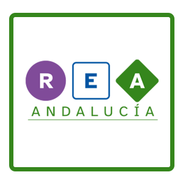

Autoría

| Título | Mi propio videojuego |
|---|---|
| Descripción | REA de la materia de Computación y Robótica para 1º de ESO sobre los videojuegos creados con Scratch |
| Persona elaboradora de contenido |
Jesús Barreto Pestana / Juan Francisco Soto García |
| Persona asesora en DUA y lectura fácil | Lydia Nacimiento Rodríguez |
| Persona de soporte técnico | José Pujol Pérez |
| Persona coordinadora de la materia | Francisco Javier Álvarez Jiménez |
| Organización | Dirección General de Formación del Profesorado e Innovación Educativa. Consejería de Educación y Deporte. Junta de Andalucía. |
| Licencia | Licencia Creative Commons Reconocimiento No comercial Compartir igual 4.0 |
Este contenido fue creado con eXeLearning, el editor libre y de fuente abierta diseñado para crear recursos educativos.

Aquí tienes el archivo fuente para editar este REA

- Este REA se ha publicado bajo Licencia Creative Commons Reconocimiento No comercial Compartir igual 4.0
- Esto significa que tienes la posibilidad de poder usarlo, descargarlo, redistribuirlo y modificarlo para adaptarlo a tus necesidades.
- Sigue estos pasos para usar/redistribuir/modificar este REA:
1. Descarga el archivo fuente. Con esto tienes el recurso original en formato editable.
2. Modifícalo usando eXeLearning.
3. Si aun no lo tienes, descarga e instala el estilo EducaAnd.
4. Si lo modificas, has de reconocer la autoría y publicarlo con la misma licencia (CC BY-SA-NC).
Puedes usar esta cita para referenciarlo:
Este REA es una adaptación del recurso original "Crea tu REA con calidad: guía para personas elaboradoras" del Proyecto REA Andalucía de la Consejería de Educación y Deporte de la Junta de Andalucía, que lo distribuye bajo licencia de CC BY-SA-NC.